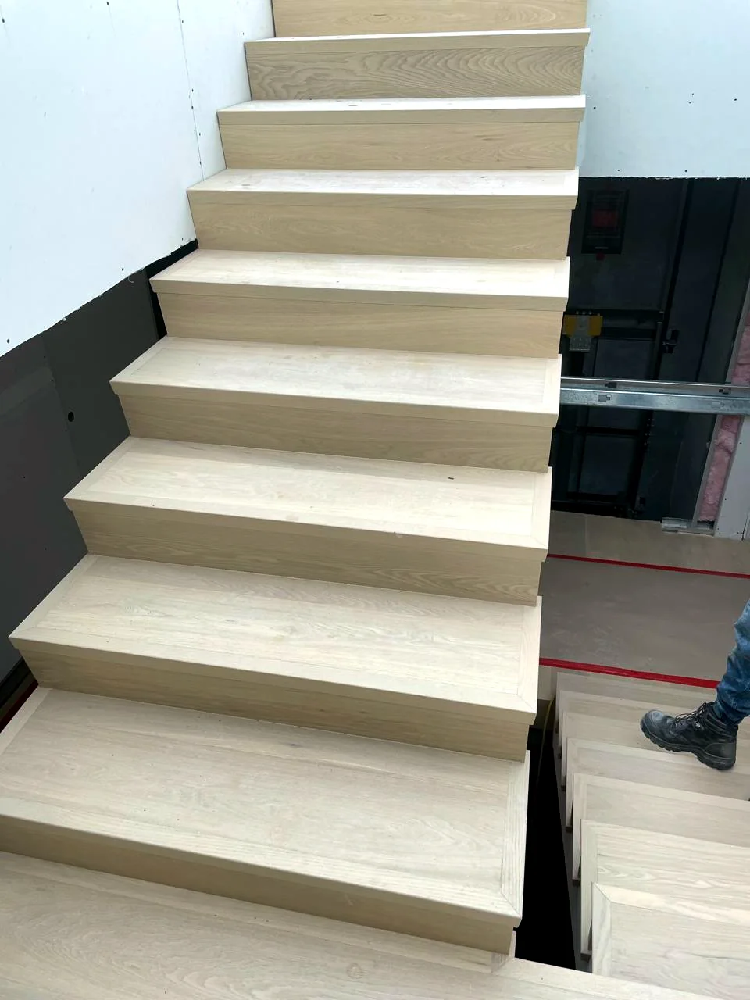
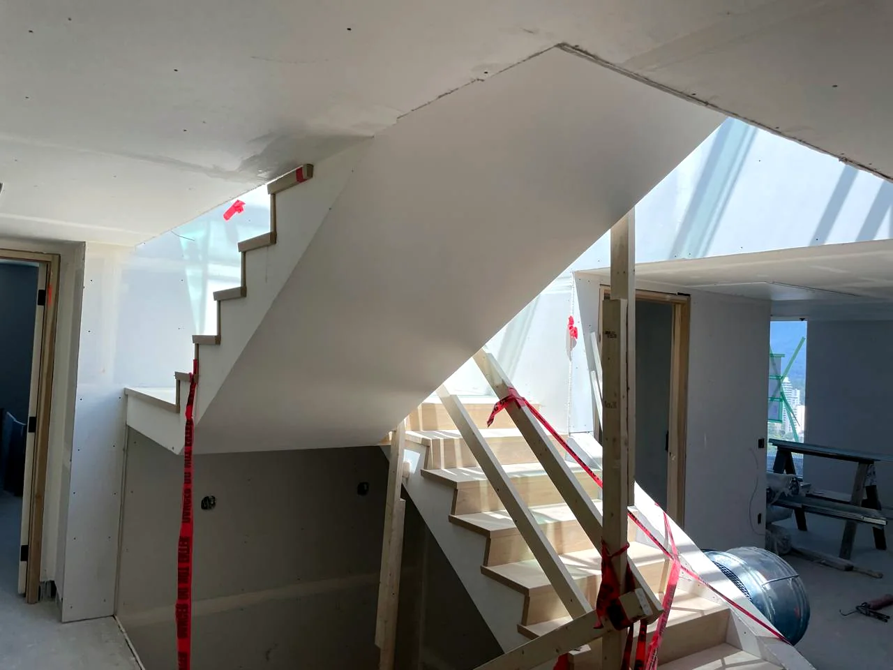
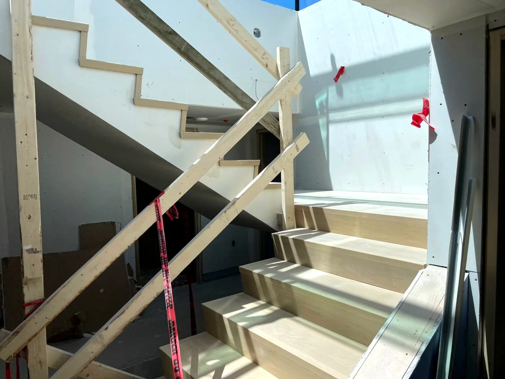

Finished stair run
Tread, riser, and nosing details fitted cleanly while the matching floor material remains protected during construction.
stairs flooring installation
Stairs expose every shortcut. Treads, risers, nosings, returns, and glue-down details need exact fitting. The protected flooring shown in these project photos is the same finished material as the stairs underneath the site protection.
Pricing: Full treads and risers from $50–$150/stair depending on complexity.
Text stair photosProject proof
These stair photos show finished stair material beside protected flooring. The floor protection is temporary jobsite protection; the finished flooring underneath is the same material family as the stairs.
Stair detail photos
Tread, riser, and nosing details fitted cleanly while the matching floor material remains protected during construction.

The covered floor area is protected for the build; underneath, it carries the same finished material relationship as the stairs.

Stairs are all visible edges: landings, nosings, risers, returns, and the transition into the surrounding flooring.

Protection stays down while finish work continues so completed flooring and stair details are not damaged before handoff.
Text stair photos, number of stairs, landing details, product type, city, and timeline for a faster estimate.
Quick spam check to protect contact info from robocrawlers.
Phone and email appear automatically after verification.